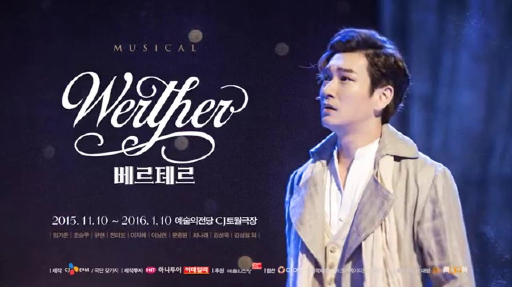

- Sweeney Todd
- Jekyll And Hyde
- Werther
뮤지컬 Werther

베르테르는 요한 볼프강 폰 괴테가 1774년 발표한 젊은 베르테르의 슬픔을 원작으로 만든 창작 뮤지컬. 2000년 11월 두산아트센터 연강홀에서 초연이 올라왔고, 2020년 20주년 공연까지 총 열한차례 공연이 올라왔다. 고선웅 극본에 정민선 작곡가가 참여했다. 초연 연출은 김광보로 재연 이후로 여러 연출가가 각 공연마다 맡았다. 2000년 초연부터 2012년까지 원작과 동일하게 젊은 베르테르의 슬픔이었다가, 2013년부터 현재의 제목으로 바뀌었다.
1774년 독일의 문학가 요한 볼프강 폰 괴테가 쓴 소설. 음울했던 괴테의 연애경험을 바탕으로 쓰인 소설인데 대체로 서간체(편지) 형식으로 쓰였다. 편집자[1]의 간단한 서술인 프롤로그로 시작하여, 초중반부는 주인공인 베르테르가 친구인 빌헬름에게 쓴 편지를 순서대로 보여주는 형식으로 쓰여 있고, 후반부에선 편집자가 베르테르의 편지와 지인들에게 얻은 정보를 엮어 사건을 재구성하여 3인칭으로 서술하고 있다.
대부분 괴테 자신의 경험을 바탕으로 했고[2][3], 결말부에 주인공이 자살하는 내용은 괴테가 같은 법원에 근무하던 친구 '예루잘렘'이 유부녀를 사랑하다가 괴로움을 견디지 못하고 권총으로 자살한 사건에서 영향받았다. 특히 아이러니한 점은 이때 예루잘렘이 자살에 사용한 권총이 어쩌다보니 괴테가 사랑했던 샤를로테의 남편으로부터 빌린 권총이었던 것.[4]